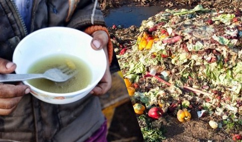
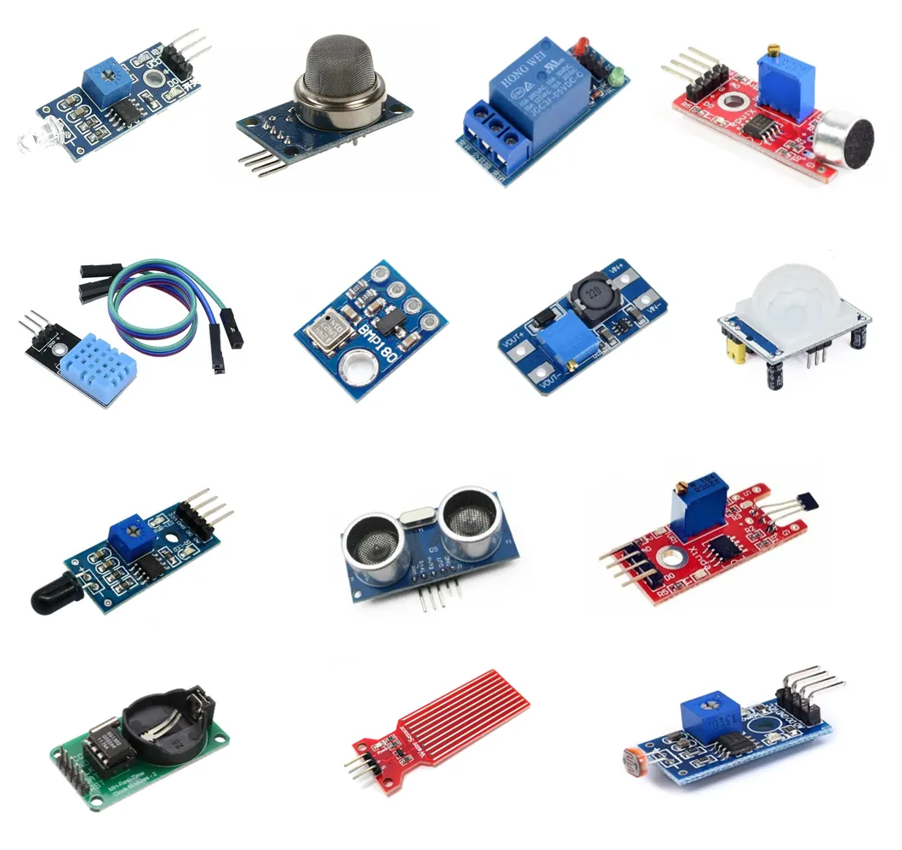
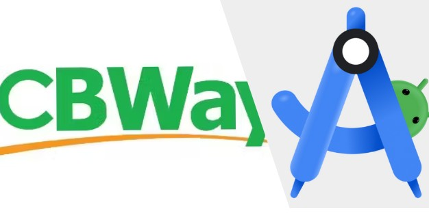
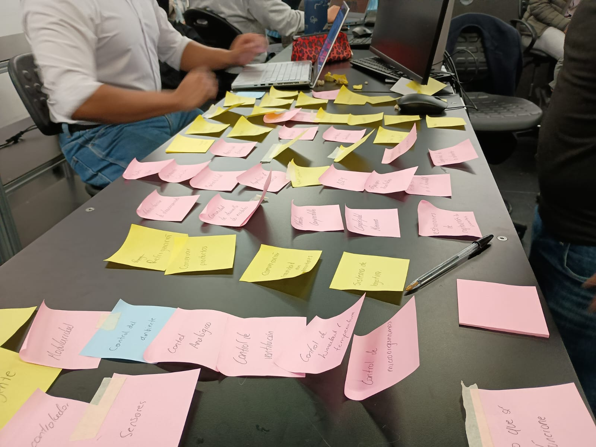
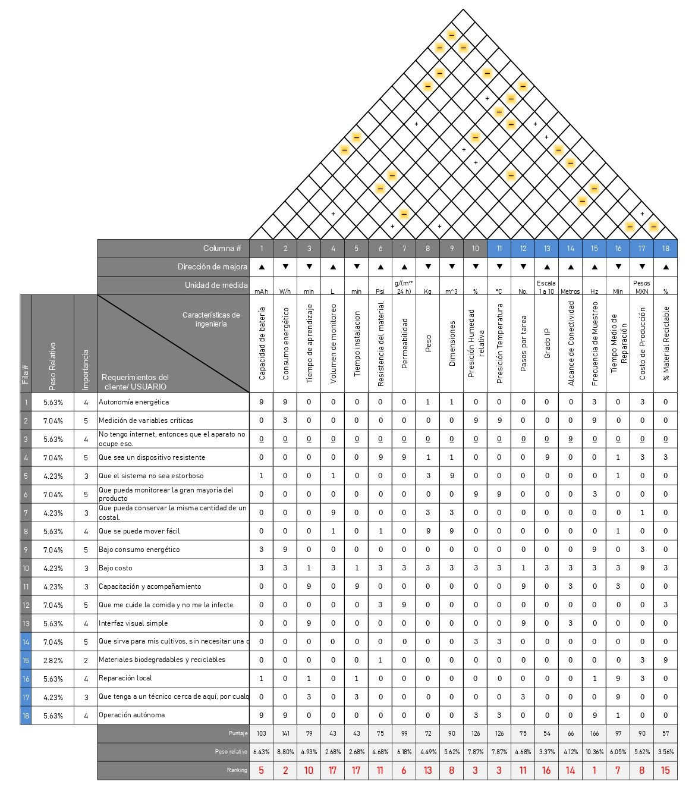
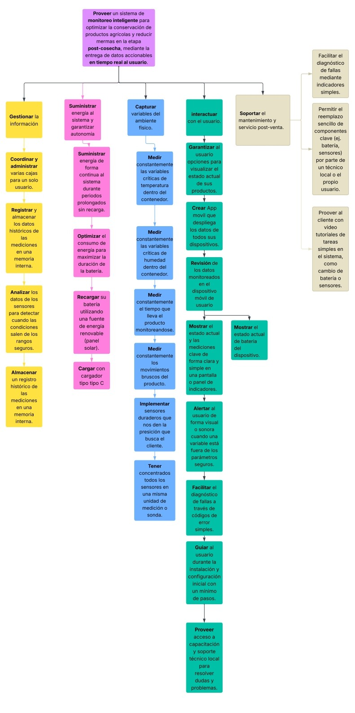

¿Quiénes somos?
Estudiantes de la Universidad Iberoamericana Ciudad de México, de la carrera de Ingeniería en Mecatrónica y sistemas ciberfísicos, del séptimo semestre.
Somos un grupo de 3 alumnos de la clase de Integración mecatrónica, con el propósito de hacer un proyecto que pueda ayudar a la sociedad, basándonos en las PRONACES.

Estudiante de Ingeniería en mecatrónica y sistemas ciberfísicos
7mo Semestre
Biografía edu
Estudiante de Ingeniería en mecatrónica y sistemas ciberfísicos
7mo Semestre
Yo soy Sebastián de Jesús Enguilo Ruiz, estudiante de ingeniería mecatrónica y sistemas ciberfísicos. Me gusta tener un reto diferente todos los días y esa es una de las cosas que te da la ingeniería. Me gusta todo lo que hago en la carrera, aunque no me considero específicamente excelente en algo. También me gusta el cine, leer y el fútbol.
Estudiante de Ingeniería en mecatrónica y sistemas ciberfísicos
7mo Semestre
Soy Leo, estudiante de ingeniería en mecatrónica y sistemas ciberfísicos. Me gusta la programación y cualquier cosa que tenga que ver con circuitos digitales o computadoras. Siento que esta carrera me permite explorar las muchas posibilidades y aplicaciones que tienen mis campos de preferencia. También me gusta la música y los videojuegos.
Objetivo
México tiene dos problemas que son a su vez contradictorios: Más de 10 millones de personas padecen de hambruna y a la vez, anualmente se pierden miles de toneladas de alimentos.
Pero este desperdicio de comida, que existe a pesar de las personas que padecen hambruna, se debe a que el 30% del alimento se puerde durante la siembra y cosecha, y un 32% adicional
se desperdicia en centrales de abastos y áreas de almacenamiento agrícola, por una gestión deficiente.
El desperdicio en la parte del almacenamiento suele ocurrir por plagas o malas condiciones de almacenamiento.
Nuestro proyecto propone un dispositivo que pueda monitorear en tiempo real varias variables como temperatura o humedad de los almacenes de cosechas para evitar estas enormes perdidas de comida. Esto puede contribuir direcetamente a combatir el habmbre. Se integrará con una pantalla y hasta con dispositivos móviles para poder monitorear estos datos y lelvar un registro de los valores leídos.
Contexto del problema
Problemática Industrial del Proyecto: Seguridad Alimentaria y Eficiencia en la Cadena de Suministro

El proyecto ataca una de las paradojas más graves de México: la coexistencia del
hambre y el desperdicio masivo de alimentos. A nivel nacional, más de 30
millones de personas sufren de alimentación deficiente, y un tercio de este grupo
padece hambruna. Simultáneamente, se pierden millones de toneladas de
alimentos anualmente. El problema se concentra en dos fases críticas de la
cadena de suministro: hasta un 30% del alimento se pierde durante la siembra
y cosecha, y un 32% adicional se desperdicia en centrales de abasto y áreas
de almacenamiento agrícola debido a una gestión y disposición ineficientes.
Estas mermas no solo representan una pérdida económica masiva para
productores y comerciantes, sino que también tienen un profundo impacto social
y ambiental. La falta de herramientas para una gestión precisa del inventario postcosecha agrava esta situación.
Ventajas en el Marco de la Industria 4.0:
Nuestra solución se posiciona en la vanguardia de la Industria 4.0 al digitalizar una fase tradicionalmente empírica de la cadena agroalimentaria. A través del Internet de las Cosas (IoT), transformamos un proceso pasivo de almacenamiento en un sistema de gestión activo e inteligente. El proyecto introduce la capacidad de monitoreo en tiempo real y la analítica de datos, permitiendo a los usuarios pasar de una gestión reactiva (basada en la inspección visual y la experiencia) a una toma de decisiones proactiva y basada en datos. Esto no solo optimiza la disposición de los productos para reducir el desperdicio, sino que también introduce una cultura de mejora continua fundamentada en el principio: "lo que no se puede medir, no se puede mejorar".
Estado Actual de la Tecnología: Marco Teórico
El fundamento técnico del proyecto se basa en la aplicación de sistemas embebidos y la sensórica para la monitorización de variables ambientales críticas que afectan la vida útil de los productos agrícolas.
- Principios de Funcionamiento: La solución se materializa en un dispositivo compacto, diseñado para acoplarse a las cajas plásticas de uso común en el sector. Este equipo emplea una sonda multisensorial que concentra los transductores (sensores de humedad, temperatura y presión) para estar en contacto directo con los productos. Estos sensores convierten las condiciones físicas del entorno en señales eléctricas cuantificables, las cuales son procesadas por un microcontrolador (ESP) que, a su vez, transmite los datos a través de protocolos de comunicación inalámbrica (IoT).
- Plataforma y Comunicación: La información se envía a una plataforma en la nube y se visualiza a través de una aplicación móvil nativa. La comunicación entre el dispositivo y la aplicación se establece mediante protocolos como UART. La interfaz gráfica permite al usuario visualizar datos en tiempo real, recibir alertas personalizadas y gestionar múltiples unidades de monitoreo simultáneamente.
- Inteligencia del Sistema: A futuro, el sistema tiene el potencial de integrar sistemas expertos o modelos de Machine Learning que, alimentados por los datos históricos, puedan ofrecer recomendaciones predictivas sobre la gestión óptima del inventario, asesorando al usuario para maximizar la vida útil y el valor de sus productos.
- Factor Innovador: Mientras que la mayoría de las soluciones Agrotech se centran en la fase de siembra y cultivo, nuestro proyecto se enfoca en el nicho desatendido pero crítico de la etapa post-cosecha y comercialización. A diferencia de soluciones similares como Tali de XLAB (enfocada en productos de lujo como vinos y puros), nuestro dispositivo está diseñado para ser accesible y aplicable al sector agrícola masivo.
Mercadeo: Estudio de Benchmarking
- Clientes Potenciales:
- Productores agrícolas: Agricultores que buscan una herramienta para monitorear de manera precisa las condiciones de su cosecha almacenada antes de la venta.
- Comerciantes de alimentos:Comerciantes de alimentos: Vendedores y distribuidores en centrales de abasto y otros puntos de venta que necesitan un control riguroso sobre su inventario para minimizar pérdidas y optimizar la rotación de productos.
- Análisis de Competencia:
- Competidores Directos:
- XLAB: Su solución es conceptualmente similar pero se enfoca en un mercado de nicho de alto valor (vinos, puros), no en el sector agrícola general.
- Vaisala: Ofrece sistemas de monitoreo de alta precisión, pero sus productos están orientados a un mercado industrial internacional con un costo que los hace poco accesibles para el agricultor o comerciante promedio en México.
- Soluciones Sustitutas: El método predominante actual es empírico. Los agricultores y comerciantes confían en su experiencia, registros mentales y la inspección visual para tomar decisiones. La principal desventaja de este método es su falta de precisión, su subjetividad y la incapacidad de anticipar problemas antes de que sean evidentes, resultando en altas tasas de desperdicio.

- Competidores Directos:
- Proveedores y Cadena de Suministro:
- Componentes Electrónicos: Se cuenta con una estrategia de suministro diversificada a través de distribuidores internacionales de alto volumen como Mouser, DigiKey y Newark, garantizando acceso a un amplio catálogo de sensores y microcontroladores.
- Automatización Industrial: Para componentes más robustos, se recurrirá a distribuidores nacionales como RS&RC Automation y ABT Automation, y representantes de OEMs como ifm y SICK.
- Software y Desarrollo: El desarrollo de la aplicación se basará en Android Studio y su SDK.
- Fabricación de Hardware: La producción de las placas de circuito impreso (PCB) se realizará con PCBWAY. Se identifica un riesgo potencial en los tiempos de entrega debido a la logística de importación desde China, lo cual deberá ser gestionado mediante una planificación de inventario adecuada.
Identificación preliminar del problema

Caracterización del Producto según las Dimensiones de Calidad y Diseño
- Rendimiento y Precisión (Performance): El sistema está diseñado para ofrecer un monitoreo confiable y exacto. La precisión de los sensores es un pilar fundamental, operando con una tolerancia de ±5% para la medición de humedad y ±2°C para la temperatura. Las lecturas se realizan de manera estándar cada 30 minutos para optimizar la vida de la batería. No obstante, el sistema reacciona de forma dinámica: si una variable excede los umbrales definidos por el usuario, el evento se registra y se notifica de inmediato. Las alertas críticas se envían al dispositivo móvil del usuario si la condición anómala persiste por más de 60 segundos, evitando falsas alarmas por fluctuaciones momentáneas.
- Fiabilidad (Reliability): La confiabilidad a largo plazo es un requisito clave. Los sensores, componentes más sensibles del sistema, están garantizados para una vida útil de 3 años. El dispositivo es alimentado por una batería recargable diseñada para un ciclo de vida aproximado de un año, la cual es fácilmente reemplazable por el usuario. Aunque el hardware está diseñado para una máxima disponibilidad, la conectividad depende de la red Wi-Fi del cliente. Para mitigar esto, el sistema está preparado para gestionar y recuperarse de pérdidas de conexión intermitentes sin perder datos críticos.
- Durabilidad (Durability): El dispositivo está construido para soportar las exigentes condiciones de trabajo de campo y almacén. La carcasa ofrece protección contra el ingreso de polvo y resiste salpicaduras de agua (no es sumergible). Un requerimiento esencial del cliente es la resistencia a caídas desde una altura de 2 a 2.5 metros sin sufrir daños graves. El diseño general es robusto para aguantar el manejo rudo inherente a los sectores objetivo. Además, el sistema garantiza su operatividad en un amplio rango de temperaturas, desde -10°C hasta 100°C.
- Facilidad de Mantenimiento (Serviceability) El mantenimiento por parte del usuario se ha simplificado al máximo. La batería es fácilmente accesible y reemplazable, similar a la de un control remoto, eliminando la necesidad de asistencia técnica. El dispositivo realiza rutinas de autocalibración de forma automática. La única intervención requerida por el usuario es la configuración de los parámetros al iniciar un nuevo ciclo de monitoreo con un producto diferente.
- Diseño y Estética (Aesthetics & Design): El diseño físico prioriza la funcionalidad y durabilidad. El material de la carcasa transmite una sensación de robustez y utiliza un color azul pizarra (Slate Blue) para una alta visibilidad en entornos de trabajo congestionados. Por su parte, la aplicación móvil está diseñada con una interfaz de usuario intuitiva. Al abrirla, el usuario tiene una vista inmediata del estado de todas sus unidades registradas. Un menú de navegación claro permite acceder fácilmente a funciones secundarias como el manual de usuario y el historial de alertas.
- Características Adicionales (Features): Más allá del monitoreo en tiempo real, la aplicación enriquece la toma de decisiones del usuario a través de un historial de datos completo para cada ciclo, presentado en gráficos fáciles de interpretar que incluyen temperatura, humedad y registros de movimiento. La app también muestra un indicador de nivel de batería para cada dispositivo. Finalmente, para una mejor administración, toda la información histórica se puede exportar en formatos PDF y CSV.
Listado de Requerimientos Clave del Cliente

- Precisión de Sensores: Medir humedad con ±5% y temperatura con ±2°C de precisión.
- Frecuencia de Medición: Realizar lecturas cada 30 minutos y registrar eventos anómalos al instante.
- Sistema de Alertas: Notificar al usuario si una condición anómala persiste por más de 60 segundos.
- Vida Útil: Garantizar 3 años de vida útil para los sensores principales.
- Batería: Utilizar una batería recargable y fácilmente reemplazable por el usuario con un ciclo de vida de ~1 año.
- Resistencia: Soportar caídas de hasta 2.5 metros y ser resistente a polvo y salpicaduras de agua.
- Rango Operativo: Funcionar correctamente en temperaturas de -10°C a 100°C.
- Mantenimiento: Ser autocalibrable y de mantenimiento sencillo para el usuario.
- Diseño Físico: Ser robusto y de un color visible como el azul pizarra.
- Interfaz de App: Mostrar un resumen de estado inmediato al abrir la aplicación.
- Historial de Datos: Registrar y mostrar gráficamente la historia de temperatura, humedad y movimiento.
- Exportación de Datos: Permitir la exportación de reportes en formato PDF y CSV.
- Indicador de Batería: Mostrar el nivel de batería de cada dispositivo en la app.
Para este ejercicio, también se le pidió a Gemini, ponerse en el papel de un granjero en una zona rural con el contexto de nuestro proyecto para ver qué
podemos llegar a esperar de nuestros potenciales usuarios. Se usó el siguiente prompt:
- Eres un agricultor en una comunidad rural en México. Te enfrentas a todas las problemáticas del sector agricultor en este país, como la escasez del agua, las sequías, los desastres naturales, etc... Sin embargo, también te encuentras limitado por cuestiones económico-sociales, como falta de acceso a electricidad (y por lo tanto a internet y telecomunicaciones), costumbres y tradiciones culturales que podrían limitar la adopción de nuevos métodos o tecnologías; también, cuentas con recursos económicos limitados, por lo que, la compra de otros productos o el simple hecho de transportarse con lleva una contemplación previa a hacerlo. También tienes una familia (5 miembros) que debes sostener, asegurándote, por lo menos, de que sus necesidades básicas son cubiertas. En general, imagínate como una persona en una región rural de México, en una situación bastante marginal que podría impedir la adopción de una nueva tecnología mecatrónica que busque aliviar la problemática de la conservación y distribución de alimentos.
En el cuál, recibimos la siguiente respuesta:
Mira, para serte franco, lo que necesito es algo que me quite de preocupaciones. Necesito un aparatito que pueda poner con mis productos y que me diga cómo están las cosas, así de simple.
Lo más importante es que sea confiable con la temperatura y la humedad. No tiene que ser exacto como de laboratorio, pero sí lo suficientemente bueno para que yo sepa si mi producto está en riesgo. Si me dice que está a 10 grados, que no esté en realidad a 15, ¿me entiendes? Con que revise cómo van las cosas cada media hora, es más que suficiente.
Ahora, sobre los avisos, no quiero que me esté molestando por cualquier cosita. A veces abres la puerta del almacén y la temperatura cambia un poco de golpe. Mejor que se espere un minutito y, si la cosa sigue mal de verdad, entonces sí, que me mande una alerta al celular para ir a checar qué está pasando.
El aparato en sí tiene que ser de batalla, muy aguantador. Aquí en el trabajo todo se cae, se golpea, se moja con salpicaduras y siempre hay mucho polvo. Necesito algo que si se cae de una pila de cajas, no se rompa y siga funcionando como si nada. Por eso también es importante que sea de un color que se vea, para no perderlo entre el relajo. Un azul o algo así que resalte estaría perfecto. Además, tiene que aguantar tanto el frío de la cámara como el calorón de afuera.
En cuanto a la pila, no quiero estar batallando. Que le dure por lo menos un año y que cuando se acabe, yo mismo la pueda cambiar fácil, como si fuera la de un control de la tele. La idea es que el equipo me dure unos buenos tres años sin problemas y que no tenga que estarlo calibrando ni nada raro; que funcione solito y bien.
Ya en el celular, la aplicación tiene que ser súper fácil de usar. Quiero abrirla y ver de volada un resumen de todas mis cajas, que me diga si todo está 'OK' o si alguna necesita mi atención. Y claro, que me avise cuánta pila le queda a cada aparato.
Finalmente, sería muy útil poder ver el historial, o sea, cómo estuvo la temperatura de la semana pasada, para aprender de lo que pasó y mejorar. Si esa información la puedo descargar en un reporte para mis archivos, pues qué mejor.
En resumen: quiero algo fácil de usar, que sea resistente como un tanque y que me dé la tranquilidad de que mi producto está bien cuidado.
Despliegue de la Función de Calidad (QFD)
Para asegurar que nuestra solución no solo fuera técnicamente funcional, sino también genuinamente útil y adoptable por las comunidades a las que sirve, implementamos la metodología de Despliegue de la Función de Calidad (QFD). Este proceso nos permite traducir de manera sistemática las necesidades, a menudo expresadas en lenguaje cotidiano, a especificaciones técnicas concretas que guían el diseño de ingeniería.
Características de Ingeniería
El primer paso fue definir los parámetros técnicos que describirían el rendimiento y las cualidades de nuestro dispositivo. A través de un análisis de las necesidades del usuario, establecimos 18 características de ingeniería medibles que servirían como la base para nuestro diseño. Estas son las métricas que nos permitirían evaluar objetivamente el éxito de nuestro prototipo.
Listado Final de Características de Ingeniería:
- Precisión del Sensor de Humedad (±%RH)
- Precisión del Sensor de Temperatura (±°C)
- Capacidad de Batería (mAh)
- Permeabilidad del Contenedor (g/m2 · 24h)
- Tiempo Medio de Reparación (min)
- Costo de Producción (Pesos MXN)
- Dimensiones (m3)
- Tiempo de Aprendizaje (min)
- Resistencia del Material (Psi)
- Pasos por Tarea (No.)
- Peso (Kg)
- Alcance de Conectividad (Metros)
- % de Material Reciclable (%)
- Grado IP (Escala 1 − 10)
- Tiempo de Instalación (min)
- Volumen de Monitoreo (L)
Esto se puede apreciar mejor en nuestro House of Quality:
Análisis de Resultados de la Matriz HoQ
Una vez completada la matriz de la Casa de la Calidad (HoQ), procedimos a calcular la importancia ponderada de cada característica. Los resultados, expresados en un ranking del 1 al 18, nos proporcionaron una jerarquía clara de prioridades de diseño. Este ranking no es una simple lista; es el mapa que nos indica dónde debemos enfocar nuestros esfuerzos de ingeniería para generar el mayor impacto positivo para el usuario final.
Principales Hallazgos del Análisis: - Prioridad #1: La Fiabilidad del Monitoreo. El ranking reveló un grupo dominante de características en las primeras posiciones: Frecuencia de Muestreo (Ranking 1), Consumo Energético (2), y la Precisión de los Sensores de Humedad y Temperatura (ambos con Ranking 3). Este resultado es inequívoco: la función más crítica del sistema es su capacidad para ser un monitor confiable, preciso y autónomo. La prioridad del diseño debe ser asegurar que el dispositivo mida correctamente y opere por largos periodos sin intervención. - La Sostenibilidad Real: Energía y Reparabilidad. La Capacidad de la Batería (5) y el Tiempo Medio de Reparación (7) se posicionaron firmemente en el top 10. Esto valida cuantitativamente la retroalimentación de la comunidad. Un dispositivo que requiere recargas constantes o que no puede ser reparado localmente está destinado al fracaso en este contexto. La verdadera sostenibilidad del proyecto reside tanto en su autonomía energética como en la capacidad de la comunidad para mantenerlo funcionando. - El Factor Humano: Costo y Simplicidad. El Costo de Producción (8) y el Tiempo de Aprendizaje (10) también obtuvieron una alta priorización. Nuestro análisis confirma que la viabilidad económica no es un objetivo secundario, sino una característica de diseño fundamental. De igual manera, la simplicidad de uso es un factor crítico para garantizar la aceptación y el uso continuo de la tecnología.
Claro, aquí tienes el complemento para el Análisis de Resultados, explicando el papel que juegan las características de ingeniería que, aunque no ocuparon los primeros puestos del ranking, son fundamentales para la integridad y la calidad final del producto.
El Papel de las Características de Soporte y Calidad
Si bien el análisis prioriza un núcleo de funcionalidades críticas, es importante destacar el rol del resto de las características. Estas no son menos importantes; más bien, representan la base de calidad, la usabilidad y la durabilidad que hacen que el producto sea cohesivo y confiable en el mundo real. Su ranking más bajo indica que, en la etapa de un Producto Mínimo Viable (MVP), se aceptan niveles de rendimiento estándar en estas áreas para no comprometer las prioridades principales.
- Calidad Física y Supervivencia del Dispositivo: Aquí agrupamos la Resistencia del Material (Ranking 11), la Permeabilidad (6) y el Grado IP (16). Aunque la Resistencia y el Grado IP no están en el top 5, son las que aseguran que el dispositivo sobreviva en el entorno para el que fue diseñado. La Permeabilidad, con un ranking más alto (6), actúa como un guardián silencioso; sin un buen sellado, las mediciones de los sensores de alta precisión serían inútiles. El ranking nos indica que el objetivo no es crear un dispositivo indestructible (lo que dispararía el costo), sino uno suficientemente robusto (IP54) para el uso diario en condiciones rurales
- Usabilidad y Experiencia de Usuario: Este grupo incluye las Dimensiones (8), el Peso (13), los Pasos por tarea (11) y el Tiempo de instalación (17). Estas características definen la experiencia ergonómica y la facilidad de interacción con el dispositivo. Su ranking confirma que, si bien la prioridad absoluta es salvar la cosecha, un dispositivo pesado, grande o difícil de instalar generaría una barrera para su adopción. El objetivo aquí es cumplir con la necesidad del usuario de que “el sistema no sea estorboso” y que su primer contacto con la tecnología sea positivo y sencillo.
- Funciones Complementarias y Visión a Futuro: Finalmente, el Alcance de Conectividad (14) y el % de Material Reciclable (15) representan funcionalidades de conveniencia y valores de proyecto. Un alcance funcional es necesario, pero buscar un alcance extremo iría en detrimento del Consumo Energético y el Costo, ambos de mayor prioridad. Por su parte, el uso de materiales reciclables, aunque es importante para la filosofía del proyecto, se reconoce como una prioridad secundaria para el usuario final frente a la viabilidad económica y la funcionalidad inmediata. Esta es una característica que se buscará optimizar en futuras iteraciones, una vez que el valor central del producto haya sido validado.
PDS (Ficha de Especificaciones de Diseño del Producto)
A partir del análisis anterior, hemos consolidado las metas de diseño en esta Ficha de Especificaciones de Producto (PDS). Estos son los objetivos técnicos medibles que nuestro prototipo o Producto Mínimo Viable (MVP) debe cumplir para ser considerado un éxito. A continuación, se presenta la consolidación de las metas de diseño, donde cada especificación ha sido validada contra las capacidades de componentes y materiales accesibles en el mercado que se alinean con nuestras prioridades de bajo costo, bajo consumo y reparabilidad.
| Característica de Ingeniería | Especificación de Diseño | Justificación del Valor Realista |
|---|---|---|
| Frecuencia de Muestreo | 1 muestra cada 30 minutos | Este valor es determinado por software. Representa un balance óptimo entre una monitorización constante y la maximización de la autonomía, al mantener el microcontrolador en modo de sueño profundo el 99.9% del tiempo. |
| Tiempo Medio de Reparación | < 15 minutos | El diseño del encapsulado se basará en un ensamblaje con tornillería estándar. Componentes clave (batería, sensor) se conectarán a la placa principal mediante conectores, permitiendo un reemplazo rápido sin soldadura. |
| Consumo Energético | < 10µA (en modo de sueño profundo) | Se seleccionará un microcontrolador con Bluetooth de Baja Energía (BLE) integrado, diseñados para aplicaciones IoT. La tecnología actual en estos componentes permite alcanzar consumos extremadamente bajos en estado de reposo, lo cual es la clave para una autonomía prolongada. |
| Precisión del Sensor de Humedad | ±2% RH | Existen en el mercado sensores digitales combinados de humedad y temperatura de bajo costo que ofrecen este nivel de precisión como estándar industrial. Esta especificación es alcanzable sin comprometer el presupuesto. |
| Precisión del Sensor de Temperatura | ±0.3°C | La misma categoría de sensores digitales combinados comúnmente supera la meta original (±0.5°C), ofreciendo precisiones de ±0.3°C o mejores sin un impacto significativo en el costo. |
| Capacidad de Batería | ~3000 mAh (a 3.7V) | Se utilizará una batería recargable de polímero de litio (LiPo) de celda única. Esta capacidad es un estándar en el mercado que ofrece una alta densidad energética en un formato compacto y ligero, ideal para la autonomía requerida. |
| Permeabilidad del Contenedor | < 1 g/m2·24h | Esta meta se logrará mediante el diseño de la carcasa y la selección del material. Un diseño con uniones tipo machihembrado y una junta de sellado (o-ring) puede alcanzar este nivel de impermeabilidad al vapor de agua. |
| Costo de Producción | < $550.00 MXN | El análisis de costos considera un microcontrolador con BLE, un sensor digital de precisión, una batería LiPo de ~3000 mAh, un circuito de carga solar y el material de la carcasa, adquiridos en volúmenes pequeños a través de proveedores nacionales. |
| Dimensiones | Carcasa: ~110 x 90 x 25 mm | El volumen final es una consecuencia directa del tamaño de los componentes internos más voluminosos: la batería y un panel solar compacto capaz de mantenerla cargada. Este tamaño permite alojarlos eficientemente. |
| Tiempo de Aprendizaje | < 10 minutos | Se logrará a través del diseño de la interfaz de la aplicación móvil, que se centrará en la simplicidad, con una interacción mínima requerida por parte del usuario para obtener la información crítica. |
| Resistencia del Material | > 7000 Psi (a compresión) | Se empleará un termoplástico de ingeniería de uso común en manufactura aditiva (impresión 3D). Estos materiales superan por mucho este requisito, asegurando la integridad estructural del dispositivo bajo el peso del grano. |
| Pasos por Tarea | < 3 pasos (en la App) | El flujo de trabajo en la aplicación se optimizará para que el usuario pueda obtener el estado de su cosecha (sincronizar y visualizar) con el menor número de interacciones posible. |
| Peso | < 350 gramos | La suma del peso de la batería, el panel solar, la electrónica y la carcasa impresa en un termoplástico ligero permite mantenerse muy por debajo del límite de 0.5 Kg, facilitando su manejo e instalación. |
| Alcance de Conectividad | > 20 metros (línea de vista) | Los módulos Bluetooth de Baja Energía (Clase 2) integrados en microcontroladores modernos ofrecen este alcance de manera estándar, garantizando una conexión fiable sin necesidad de estar junto al dispositivo. |
| % de Material Reciclable | > 80% | La carcasa, que constituye la mayor parte del peso del producto, se fabricará con un termoplástico de alta durabilidad que es, a su vez, 100% reciclable al final de su vida útil. |
| Grado IP | IP54 | El diseño de la carcasa incorporará características de sellado (juntas, solapas) para proteger los componentes electrónicos contra la entrada de polvo y salpicaduras de agua desde cualquier dirección, condiciones típicas del entorno. |
| Tiempo de Instalación | < 5 minutos | El diseño no requerirá herramientas especiales para su instalación. La colocación del dispositivo y la inserción de la sonda de medición están pensadas para ser un proceso rápido e intuitivo. |
| Volumen de Monitoreo | N/A (Sensor de inserción) | El diseño se enfoca en un sensor tipo sonda que se inserta directamente en el grano almacenado. Por lo tanto, no es un contenedor, sino una herramienta de monitoreo para contenedores existentes (silos, costales, etc.). |
Arquitectura funcional: Diagrama desarrollado que describa la arquitectura funcional del sistema

Conclusión primera etapa
En esta primera etapa del proyecto, comprendimos la importancia de realizar una investigación profunda sobre el contexto del problema que buscamos resolver. Analizar la situación actual nos permitió identificar las causas, consecuencias y oportunidades de mejora dentro del manejo de alimentos y los sistemas de almacenamiento agrícola en México.
Asimismo, definir las necesidades y requerimientos de los usuarios resultó fundamental, ya que son ellos quienes enfrentan directamente la problemática y, por lo tanto, quienes mejor pueden orientar el desarrollo hacia una solución útil, práctica y realista.
Finalmente, el desarrollo de la arquitectura funcional nos permitió estructurar de manera clara cómo interactúan los distintos subsistemas y componentes del dispositivo, sentando las bases técnicas necesarias para pasar a la siguiente fase del proyecto: el diseño e implementación del prototipo.
En conjunto, esta etapa nos proporcionó una visión más completa del problema y una guía sólida para avanzar con un enfoque bien fundamentado y centrado en las verdaderas necesidades del usuario.